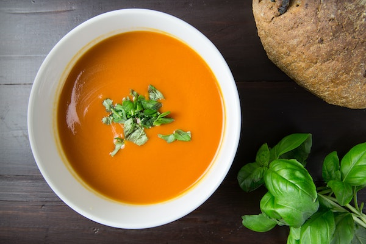

Vegetable Soup

Description
This versatile vegetable soup in a soup maker using your favorite vegetables. Serve with a dollop of creme fraîche and some herbs.
Ingredients
- 200g vegetables, such as onions, celery and carrots, chopped
- 300g potato, peeled and chopped
- 700ml vegetable stock
- crème fraîche and fresh herbs, to serve
Steps
- Put the vegetables, potatoes, and stock into a soup blender, and press the ‘smooth soup’ function. Make sure you don’t fill the soup maker above the max fill line.
- Once the cycle is complete, season, and pour into bowls with a dollop of crème fraîche and some herbs.